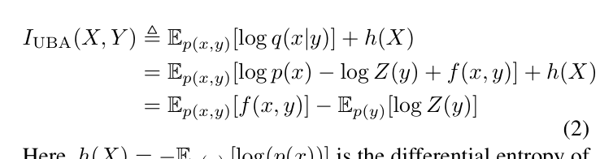
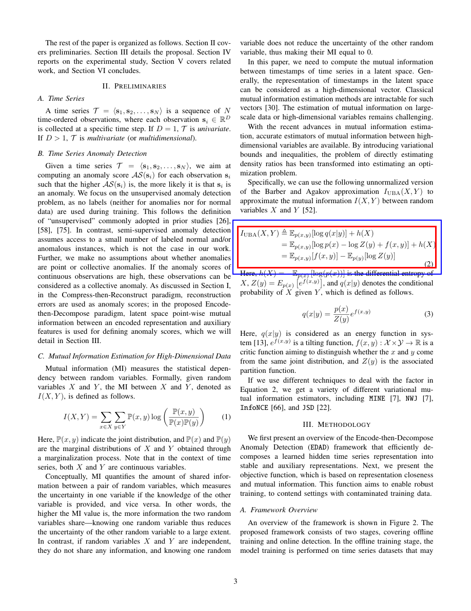

formula_002 — Page 3
Section: Related Work (conf=medium)
Final Origin: mineru_latex
Equation Group: group_p3_1 (order 1)
Crop Padding: 1%px
Edge Ink (top/bottom): 0.000 / 0.267
Risk Flags: CROP_BOTTOM_EDGE_CONTAMINATION
Formula M2 Ready: YES

Crop (padded 1%px)

Overlay (red=original, blue=padded)
Nearby Text Before:
A time series \(\mathcal{T} = \langle \mathbf{s}_1, \mathbf{s}_2, \ldots, \mathbf{s}_N \rangle\) is a sequence of \(N\) time-ordered observations, where each observation \(\mathbf{s}_i \in \mathbb{R}^ B. Time Series Anomaly Detection
Nearby Text After:
C. Mutual Information Estimation for High-Dimensional Data
LaTeX:
\begin{array}{l} I _ {\mathrm{UBA}} (X, Y) \triangleq \mathbb {E} _ {p (x, y)} [ \log q (x | y) ] + h (X) \\ = \mathbb {E} _ {p (x, y)} [ \log p (x) - \log Z (y) + f (x, y) ] + h (X) \\ = \mathbb {E} _ {p (x, y)} [ f (x, y) ] - \mathbb {E} _ {p (y)} [ \log Z (y) ] \tag {2} \\ \end{array}